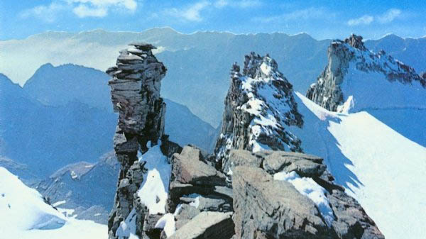
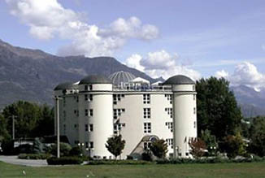
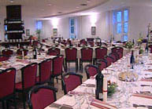
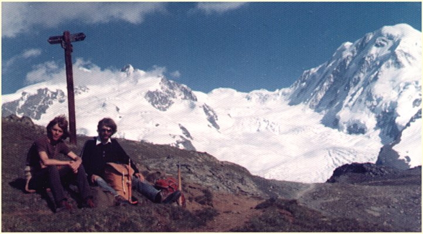
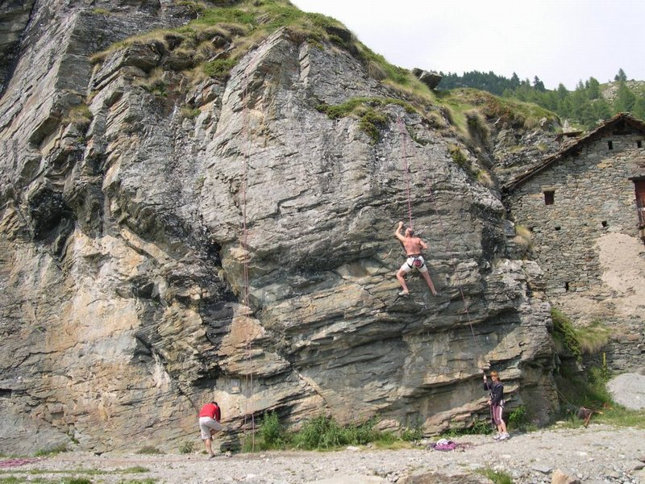

Welcome to ASIC 2009
The Eighth Annual Summer Interdisciplinary Conference, held at the Etoile du Nord hotel in Sarre, Valle d'Aosta, Italy, Wednesday, July 22 – Monday, July 27, 2009.

Gran Paradiso, one of the peaks surrounding the Valle d'Aosta.
Hotel Etoile du Nord (etoiledunord.it) is in Sarre, a few km west of Aosta, the main city in Valle d'Aosta — the large and spectacular valley where Italy, France and Switzerland meet. Aosta is a couple of hours' drive west of Milan. Valle d'Aosta lies south of Mont Blanc, southwest of Monte Rosa and the Matterhorn, and north of Gran Paradiso.
Richard M. Shiffrin of Indiana University – Bloomington is the organizer. Email correspondence should be directed to shiffrin@indiana.edu or mailed to Richard M. Shiffrin at Indiana University (see the Contact tab for the address).
About the conference
The subject matter of ASIC is interdisciplinary, within the broad frame of cognitive science. ASIC uses the successful format of previous ASIC and AIC conferences: days are free for leisure activities and discussions among participants, and talks and posters are in the later afternoon and early evening, followed by dinner. The 2009 dates were also chosen to make it convenient to combine ASIC with the Cognitive Science Society Conference and the Mathematical Psychology Conference, held successively in Amsterdam from July 29 – August 4.
The conference is open to all interested parties, and an invitation is not needed to attend. Due to the small number of spots for speakers, the organizer selects the attendees who give talks, and additional attendees have the opportunity to present posters.
Conference aims
The conference covers a wide range of subjects in cognitive science, including modeling of cognition; neuroscience and cognitive neuroscience; psychology (perception, psychophysics, attention, information processing, memory and cognition); computer science and artificial intelligence; machine intelligence and learning; methodology and statistics; linguistics, psycholinguistics and computational linguistics; and philosophy of mind and cognitive science.
Conference format
There is a single speaking session each day. If the number of participants exceeds the number of speaking slots (about 42), the first half session on a chosen day is devoted to posters. The conference starts with registration and a reception from 15:00–16:30 on Wednesday, July 22. On subsequent days (except a poster day) there are drinks and light snacks from 16:15–16:30, followed by a session of seven spoken presentations including a mid-session drink break.
This format frees most of the day for activities with colleagues, family, and friends. The time frame allows day trips to nearby sites, but return should be arranged in time for the 16:15 session start.
Invitation
The conference is open to all scholars who fit the very general theme of the conference, and their family and friends. An individual invitation is not needed. We encourage you to send the conference information to friends and colleagues.
Registration
You are not officially on the request list for presenting research (talks or posters) until you submit the registration fee, preferably by PayPal.
This fee pays for room and equipment rentals, snacks, the banquet, and more.
Fee schedule (US dollars)
| Payment window | By check or PayPal |
|---|---|
| Prior to Jan. 1, 2009 | $200 |
| Jan. 1 – March 1, 2009 | $260 |
| After March 1, 2009 | $320 |
In addition to the registration fee per person, you may purchase additional guest vouchers for other persons attending the opening reception and/or final banquet.
How to pay
- Online by PayPal (preferred).
- Send a check for the correct amount to ASIC 2009, c/o Richard M. Shiffrin, Psychology Dept., Indiana University, Bloomington, IN 47405.
Lodging
ASIC 2009 is held at Etoile du Nord, where a hold has been placed on 40 rooms.

Hotel Etoile du Nord, Sarre, Valle d'Aosta.
Hotel website: etoiledunord.it. After November 30, held rooms may be released to the general public, so early reservations are essential; late bookings may still be offered at the conference rate if any remain. Full refunds of the deposit are possible until March 1.
Rates
- €66 for two persons in a double room
- €75 for two persons in a superior double room
- €82 for one person in an economy room
- €95 for one person in a standard room
- €61 per person for three persons in a triple room
- €54 per person for four persons in a quadruple room
- €49 per person for five people in a quintuple room
- Children 0–4 free; children 5–17 pay five euro less than the prices above.
Booking requires a 20% deposit. Bookings can be made by email at office@terramica.eu, or by fax at +39.030.3758444.
Dining
Meals are taken at the dining hall at Etoile du Nord.

Dining at Etoile du Nord.
Breakfast and buffet dinner are included as part of the lodging charges for all attendees and guests. Lunches can be taken, as desired, either at the hotel or at many restaurants in town; lunches to go for various outings can also be arranged.
Dining is buffet style, with a variety of options including vegetarian meals (not just salads). There is a banquet dinner at the hotel to end the conference, including wine and beer. The food and drink offerings at the opening reception, session starts, mid-session breaks, and a supplement for the opening reception and final banquet are paid for from participants' registration fees.
Breakfasts are continental style and include bread, biscuits, croissants, jam, honey, butter, cereals, sliced cheese, yogurt, sliced salami, orange juice, milk, coffee and tea. For those wanting eggs and omelets, there is an additional charge of €5 per day.
Travel
Aosta lies in the northwest corner of Italy, where Italy meets France and Switzerland, in the large and spectacular Valle d'Aosta.
The valley has 13 major side valleys and lies south of the massif containing Mont Blanc (n/nw), Monte Rosa (n), and the Matterhorn (ne), and north of Gran Paradiso. A major superhighway, A5, runs west to Aosta from Milan (the Mont Blanc tunnel to Chamonix lies northwest of Aosta, and the St. Bernard tunnel to Switzerland lies north of Aosta).
The easiest access is by air through Milan, probably Malpensa airport, which lies west of Milan and is even closer to Aosta. Aosta is 168 km from Milan, somewhat closer from Malpensa. There are rail links (via Chivasso) and bus links from Milan to Aosta, but many attendees will probably rent a car — useful for visiting sites scattered around the large valley. There is also an airport in Aosta (Corrado Gex), and other nearby airports include Turin (Caselle), 121 km, and Geneva (Cointrin), 151 km.
For attendees continuing to Amsterdam for the Cognitive Science and Mathematical Psychology conferences, flights from Milan are plentiful, but drives through the Alps — via the Mont Blanc or St. Bernard tunnels — provide beautiful vistas. Driving distances from Aosta: Turin 114 km; Genoa 247 km; Chamonix (via Mont Blanc Tunnel) 57 km; Martigny, Switzerland (via Great St. Bernard Tunnel) 76 km; Geneva 134 km; Paris 668 km; Amsterdam 1,050 km.
Activities
The Valle d'Aosta region offers an enormous range of adventure and leisure activities, either self-guided or available as tours with guides.

One of roughly 338 marked walks in the region.
A very useful resource is the regional tourism website at regione.vda.it/turismo (click "Eng" if given the Italian version). We invite attendees to explore this extensive website at leisure — it gives more than sufficient information about all aspects of the region and its activities. For pictures of scenery in the various Aosta side valleys, see the Travel tab.
Hiking
The regional website lists and describes, with maps, approximately 338 walks (not counting the many multi-day treks possible).
Rock climbing

Rock climbing is popular throughout the valley.
The Aosta Valley has roughly 50 documented rock climbing areas — see worldtopo.com for an overview.
Other activities
Via ferrata, mountaineering, bicycling and mountain biking, rafting, kayaking, fishing, swimming, paragliding, canyoning, summer skiing, golf, horse riding, adventure parks, and hot air ballooning are all available in the region. A cable car tour runs up and over the Mont Blanc massif to Chamonix.
Culture
For culture, the region is replete with old castles, museums, and historical sites, along with many seasonal events — the regional website lists these possibilities in detail.
Contact
Email is preferred for all correspondence.
Conference organizer
Rich Shiffrin
Indiana University – Bloomington
shiffrin@indiana.edu
Tel: 812-855-4972 · Fax: 812-855-9871
Address correspondence to
Annual Summer Interdisciplinary Conference (ASIC 2009)
c/o Prof. Richard Shiffrin, Psychology Department
Indiana University, 1101 E. 10th St., Bloomington, IN 47405
Webmaster / conference coordinator
Please direct questions concerning the website to:
Ruth Eberle
Indiana University – Bloomington
reberle@indiana.edu
Muhammad Nubli Mohd Kasa
Indiana University – Bloomington